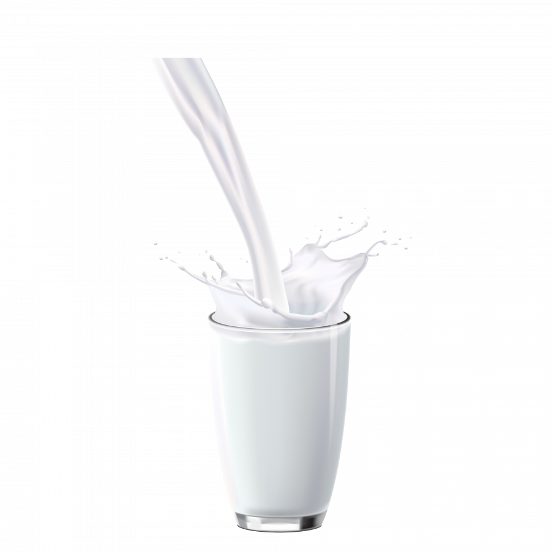

Польза молочных продуктов
В них содержатся около 250 полезных элементов: полноценные белки, жиры, углеводы, витамины, минеральные вещества. Белки молока содержат полный набор незаменимых аминокислот, легкодоступны для пищеварительных ферментов, имеют высокую усвояемость и биологическую ценность. В состав жиров молока входят линолевые кислоты, которые защищают организм человека от рака. Молочные продукты – это основные источники поступления в организм кальция, который является компонентом костной системы и зубов, необходим для функционирования кроветворной, нервной и мышечной системы.